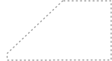
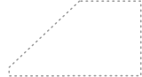
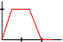

Single-Sink: Termination
In single-sink network all IDE flows terminate
The sink can never be part of a cycle.
The total amount of flow in the network is bounded.
Let \(H \subseteq G\) be the subgraph consisting of
the sink and all edges leading towards the sink.
\(\implies\) Volume of flow in \(H\) eventually stays small
\(\implies\) Then all queues in \(H\) are small
\(\implies\) \(H\) acts as a new sink
Add to \(H\) all edges leading into \(H\)
the sink and all edges leading towards the sink.
\(\implies\) Volume of flow in \(H\) eventually stays small
\(\implies\) Then all queues in \(H\) are small
\(\implies\) \(H\) acts as a new sink
Add to \(H\) all edges leading into \(H\)
\(s_1\)
\(v_2\)
\(v_1\)
\(s_3\)
\(u_3 = 6\cdot\Ind_{[1.5,2]}\)
\(s_2\)
\(t\)
\(H\)
 

Multi-Sink: Termination
There exists a multi-sink network where all IDEs cycle.
\(s_1\)
\(t_1\)



\(s\)

\(s\)
\(s\)